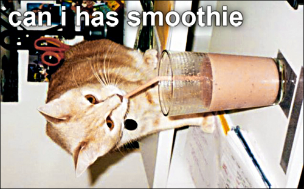

Phase 5: Neues Konzept

Yeah, ich habe ein brandneues, revolutionäres Konzept für Phase 5 ersonnen. Blödsinn schreiben ist zwar recht kurzweilig, aber es interessiert kaum einen. Deshalb satteln wir um auf Katzenbilder. Aber nicht einfach nur so - auf jedes Katzenbild kommt noch ein lustiger/niedlicher Spruch. Das wird Phase 5 in die Top-Liga der Blogs spülen.
Übrigens: Wer selbst ein lustiges Katzenbild hat und es hier veröffentlicht haben möchte, kann es mir schicken. Wenn ich es für lustig/niedlich befinde, wird es gepostet. Und nun viel Spaß mit dem neuen Phase 5!
Bild: milo trying to get a taste of my smoothie von Malingering unter CC-Lizenz
13 Kommentare zu "Phase 5: Neues Konzept"
Seiten:
1
2
Seiten:
1
2
- Externe Links im selben Fenster öffnen
- Externe Links in neuem Fenster öffnen
Nebenan
Leider haben wir keine Katze...aber wir könnten niedliche Meerschweinchenbilder machen. Hm?
Rick
Ich bin ein wenig enttäuscht. Katzencontent als aktueller Bloggerhype okay, aber Phase5 war bislang kultivierter Mainstream-Anarchismus und sollte es auch bleiben. Konsequenterweise würde ich die Lektüre von Douglas Adams - Die letzten ihrer Art empfehlen und die Viecher aus diesem Werk verwenden...
Herschel Rubinstein
@nebenan: egal, hauptsache niedlich/lustig!
@rick: ich bin katzenhaarallergiker, weshalb mir dieser schritt besonders schwer fällt. aber er muss sein. außerdem hat niemand behauptet es wäre leicht eine hure des systems zu sein. ich möchte einfach nicht vorschnell aufgeben
crucible
Man muss natürlich aufpassen, dass man beim Aufspringen auf die Internet-Main-Stream-Strömungen (was für ein Begriff!) nicht anfängt sich zu prostituieren! Obacht!
Herschel Rubinstein
aber darum geht es doch
crucible
Musst Du das so direkt sagen?
Herschel Rubinstein
transparenz ist mir einfach sehr wichtig
Daniel
Ich will mich da ja nicht soweit aus dem Fenster lehnen, als Rechtschreib- und Grammatikgott, wie meine Mitbewohner sicherlich bestätigen können, aber die Bildaufschrift brennt mir doch etwas in der Netzhaut.
Ansosten sagt schon die erste Regel der Fernsehberichterstattung. Tiere und Kinder: Das zieht immer.
Herschel Rubinstein
sei froh, dass es nur die bildaufschrift ist. ich musste das foto mit verbundenen augen bearbeiten. ein wunder, dass die schrift halbwegs richtig platziert ist.
ich gebe mir selbst übrigens 4 wochen, bis ich mich an das übermaß an niedlichkeit/lustigkeit des neuen phase 5-konzepts gewöhnt habe. aber dann gehts richtig ab
Web2.0du.de
Was hat die Katze da für einen schwarzen Fleck? Ist das ein Mikrofon? Macht die Katze jetzt auch FFF000?